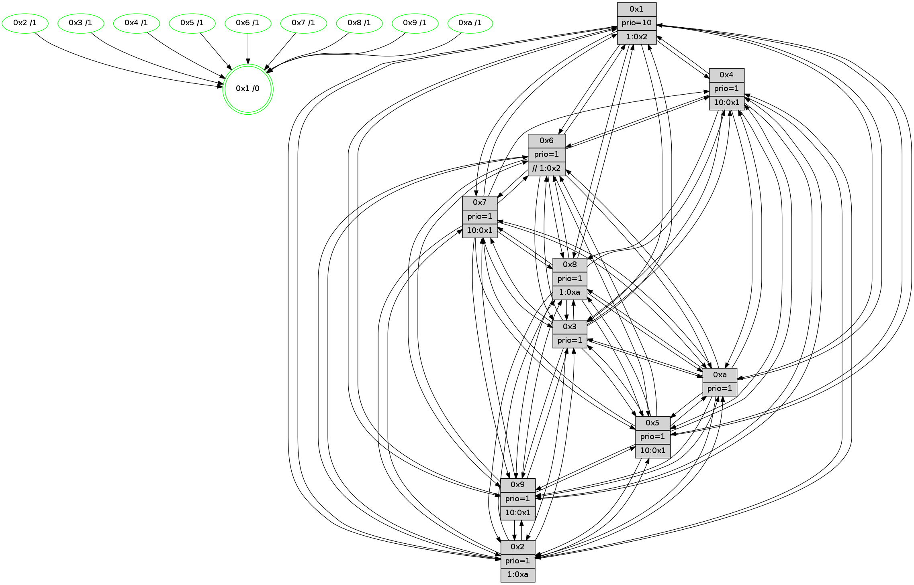

>> << IDX [start] -100 -25 -5 +0 +5 +25 +100 [1270.10757995]
 Previous packets
----------------------------------------------------------------------
1265.378795 beacon01(faad) #0 coord=01,02,03,04,05,06,07,0a,09,08 cycle=688.0ms assoc
-- color-indic=1 64 cd 57
1265.388779 beacon02(faad) #0 coord=01,02,03,04,05,06,07,0a,09,08 cycle=688.0ms assoc 64 5e 66
1265.398777 beacon03(faad) #0 coord=01,02,03,04,05,06,07,0a,09,08 cycle=688.0ms assoc 64 24 2b
1265.408776 beacon04(faad) #0 coord=01,02,03,04,05,06,07,0a,09,08 cycle=688.0ms assoc 64 53 c1
1265.418778 beacon05(faad) #0 coord=01,02,03,04,05,06,07,0a,09,08 cycle=688.0ms assoc 64 29 8c
1265.428779 beacon06(faad) #0 coord=01,02,03,04,05,06,07,0a,09,08 cycle=688.0ms assoc 64 a7 5b
1265.438781 beacon07(faad) #0 coord=01,02,03,04,05,06,07,0a,09,08 cycle=688.0ms assoc 64 dd 16
1265.448782 beacon0a(faad) #0 coord=01,02,03,04,05,06,07,0a,09,08 cycle=688.0ms assoc 64 ac 1d
1265.458784 beacon09(faad) #0 coord=01,02,03,04,05,06,07,0a,09,08 cycle=688.0ms assoc 64 22 ca
1265.468785 beacon08(faad) #0 coord=01,02,03,04,05,06,07,0a,09,08 cycle=688.0ms assoc 64 58 87
1265.480330 [Hello(9): seq=751 sym=2,5,3,4,7,6,8,10,1 sysInfo=hasWarning stat=2:15,0,5,9/5:8,11,8,7/3:15,6,14,2/4:7,6,8,0/7:11,11,11,2/6:10,8,4,12/8:5,13,9,4/10:2,11,11,4/1:9,0,1,1]
1265.483332 [Hello(10): seq=740 sym=6,2,3,8,7,5,9,4,1 sysInfo=hasWarning stat=6:0,10,7,2/2:2,4,9,11/3:0,2,12,13/8:2,11,4,2/7:4,15,14,7/5:15,15,4,0/9:6,6,13,4/4:4,13,13,0/1:14,7,8,1]
1265.486197 [Hello(7): seq=807 sym=2,3,5,6,4,8,9,10,1 sysInfo=hasWarning stat=2:1,9,4,2/3:7,0,6,2/5:3,3,0,2/6:9,7,5,10/4:1,2,1,0/8:0,10,3,0/9:11,11,3,1/10:5,4,3,6/1:0,3,12,0]
1265.489220 [Color(5) seq=370 @0:0 prio=1 >10.@1,1.@2,1.@3,1.@4]
1265.491056 [Color(7) seq=335 @0:0 prio=1 >10.@1,1.@2,1.@3,1.@4]
1265.493201 [Hello(4): seq=807 sym=5,7,6,2,3,9,8,10,1 sysInfo= stat=5:11,14,10,1/7:2,2,14,2/6:12,15,15,13/2:3,4,6,15/3:9,9,0,14/9:0,12,5,1/8:1,9,6,1/10:4,3,4,14/1:8,7,14,1]
1265.496249 [Hello(8): seq=751 sym=5,2,3,7,9,6,4,10,1 sysInfo=hasWarning stat=5:0,9,12,0/2:13,0,12,11/3:3,3,1,2/7:15,9,5,0/9:13,3,14,4/6:4,3,0,14/4:13,3,2,0/10:3,8,0,4/1:13,12,14,0]
1265.499060 [Color(8) seq=406 @0:0 prio=1 >1.@a]
1265.507181 [Color(4) seq=346 @0:0 prio=1 >10.@1,1.@2,1.@3,1.@5]
----------------------------------------------------------------------
1266.166925 beacon01(faad) #0 coord=01,02,03,04,05,06,07,0a,09,08 cycle=688.0ms assoc
-- color-indic=1 64 19 62
1266.176907 beacon02(faad) #0 coord=01,02,03,04,05,06,07,0a,09,08 cycle=688.0ms assoc 64 8a 53
1266.186907 beacon03(faad) #0 coord=01,02,03,04,05,06,07,0a,09,08 cycle=688.0ms assoc 64 f0 1e
1266.196907 beacon04(faad) #0 coord=01,02,03,04,05,06,07,0a,09,08 cycle=688.0ms assoc 64 87 f4
1266.206908 beacon05(faad) #0 coord=01,02,03,04,05,06,07,0a,09,08 cycle=688.0ms assoc 64 fd b9
1266.216908 beacon06(faad) #0 coord=01,02,03,04,05,06,07,0a,09,08 cycle=688.0ms assoc 64 73 6e
1266.226910 beacon07(faad) #0 coord=01,02,03,04,05,06,07,0a,09,08 cycle=688.0ms assoc 64 09 23
1266.236914 beacon0a(faad) #0 coord=01,02,03,04,05,06,07,0a,09,08 cycle=688.0ms assoc 64 78 28
1266.246912 beacon09(faad) #0 coord=01,02,03,04,05,06,07,0a,09,08 cycle=688.0ms assoc 64 f6 ff
1266.256913 beacon08(faad) #0 coord=01,02,03,04,05,06,07,0a,09,08 cycle=688.0ms assoc 64 8c b2
1266.269403 [Hello(5): seq=808 sym=7,6,4,3,1,9,8,10,2 sysInfo=hasWarning stat=7:14,1,2,14/6:2,13,15,3/4:15,9,8,13/3:6,7,12,0/1:5,2,12,0/9:2,8,8,10/8:13,4,6,3/10:11,10,6,8/2:2,11,12,7]
1266.275578 [Color(3) seq=437 @0:0 prio=1]
1266.277198 [Color(2) seq=384 @0:0 prio=1 >1.@a]
1266.278653 [Color(9) seq=367 @0:0 prio=1 >10.@1,1.@5,1.@a]
1266.281201 [Hello(1): seq=717 sym=4,2,9,5,10,3,8,6,7 sysInfo=coloring-mode-on,ColoringModeRequestCalled stat=4:11,5,6,1/2:0,8,15,3/9:14,10,6,1/5:12,14,8,8/10:6,15,3,7/3:5,13,15,9/8:4,12,4,1/6:0,13,2,15/7:1,12,10,15]
1266.284256 [Hello(6): seq=808 sym=2,3,5,4,7,9,8,10,1 sysInfo=hasWarning stat=2:0,1,0,0/3:2,4,1,0/5:0,11,9,3/4:9,4,7,6/7:4,15,1,13/9:7,4,0,10/8:4,6,11,5/10:15,9,10,12/1:10,8,15,1]
1266.288366 [Color(6) seq=440 @0:0 prio=1 >>1.@2,1.@3,1.@4]
1266.290699 [STC(1) #0.206 tree-change,inconsistent-stability,stable,to-color d=0]
----------------------------------------------------------------------
1266.955055 beacon01(faad) #0 coord=01,02,03,04,05,06,07,0a,09,08 cycle=688.0ms assoc
-- color-indic=1 64 a5 67
1266.965039 beacon02(faad) #0 coord=01,02,03,04,05,06,07,0a,09,08 cycle=688.0ms assoc 64 36 56
1266.975037 beacon03(faad) #0 coord=01,02,03,04,05,06,07,0a,09,08 cycle=688.0ms assoc 64 4c 1b
1266.985039 beacon04(faad) #0 coord=01,02,03,04,05,06,07,0a,09,08 cycle=688.0ms assoc 64 3b f1
1266.995040 beacon05(faad) #0 coord=01,02,03,04,05,06,07,0a,09,08 cycle=688.0ms assoc 64 41 bc
1267.005039 beacon06(faad) #0 coord=01,02,03,04,05,06,07,0a,09,08 cycle=688.0ms assoc 64 cf 6b
1267.015040 beacon07(faad) #0 coord=01,02,03,04,05,06,07,0a,09,08 cycle=688.0ms assoc 64 b5 26
1267.025044 beacon0a(faad) #0 coord=01,02,03,04,05,06,07,0a,09,08 cycle=688.0ms assoc 64 c4 2d
1267.035044 beacon09(faad) #0 coord=01,02,03,04,05,06,07,0a,09,08 cycle=688.0ms assoc 64 4a fa
1267.045044 beacon08(faad) #0 coord=01,02,03,04,05,06,07,0a,09,08 cycle=688.0ms assoc 64 30 b7
1267.056647 [STC(3)->1 #0.206 tree-change,inconsistent-stability,stable,to-color d=1]
1267.058109 [Hello(9): seq=752 sym=2,5,3,4,7,6,8,10,1 sysInfo=hasWarning stat=2:15,0,5,9/5:9,12,8,7/3:15,6,14,2/4:8,7,8,0/7:12,12,11,2/6:11,9,4,12/8:6,14,9,4/10:3,11,11,4/1:10,0,2,1]
1267.060832 [Hello(8): seq=752 sym=5,2,3,7,9,6,4,10,1 sysInfo=hasWarning stat=5:1,9,12,0/2:13,1,12,11/3:3,4,1,2/7:15,9,5,0/9:14,4,14,4/6:5,4,0,14/4:13,4,2,0/10:4,9,0,4/1:14,12,15,0]
1267.063342 [STC(2)->1 #0.206 tree-change,inconsistent-stability,stable,to-color d=1]
1267.068894 [STC(8)->1 #0.206 tree-change,inconsistent-stability,stable,to-color d=1]
1267.071168 [Color(8) seq=407 @0:0 prio=1 >1.@a]
1267.073324 [STC(7)->1 #0.206 tree-change,inconsistent-stability,stable,to-color d=1]
1267.075628 [Hello(4): seq=808 sym=5,7,6,2,3,9,8,10,1 sysInfo= stat=5:12,14,10,1/7:2,2,14,2/6:13,0,15,13/2:3,5,6,15/3:9,10,0,14/9:1,13,5,1/8:1,9,6,1/10:4,3,4,14/1:9,7,15,1]
1267.079100 [STC(4)->1 #0.206 tree-change,inconsistent-stability,stable,to-color d=1]
1267.080358 [Color(7) seq=336 @0:0 prio=1 >10.@1,1.@2,1.@3,1.@4]
1267.082172 [STC(5)->1 #0.206 tree-change,inconsistent-stability,stable,to-color d=1]
1267.084057 [STC(9)->1 #0.206 tree-change,inconsistent-stability,stable,to-color d=1]
1267.085868 [Color(4) seq=347 @0:0 prio=1 >10.@1,1.@2,1.@3,1.@5]
1267.089531 [Hello(10): seq=741 sym=6,2,3,8,7,5,9,4,1 sysInfo=hasWarning stat=6:1,11,7,2/2:2,5,9,11/3:0,3,12,13/8:3,12,4,2/7:5,0,14,7/5:0,15,4,0/9:6,7,13,4/4:5,14,13,0/1:15,8,9,1]
1267.092988 [STC(10)->1 #0.206 tree-change,inconsistent-stability,stable,to-color d=1]
1267.094977 [Color(5) seq=371 @0:0 prio=1 >10.@1,1.@2,1.@3,1.@4]
----------------------------------------------------------------------
1267.743187 beacon01(faad) #0 coord=01,02,03,04,05,06,07,0a,09,08 cycle=688.0ms assoc
-- color-indic=1 64 61 69
1267.753168 beacon02(faad) #0 coord=01,02,03,04,05,06,07,0a,09,08 cycle=688.0ms assoc 64 f2 58
1267.763170 beacon03(faad) #0 coord=01,02,03,04,05,06,07,0a,09,08 cycle=688.0ms assoc 64 88 15
1267.773169 beacon04(faad) #0 coord=01,02,03,04,05,06,07,0a,09,08 cycle=688.0ms assoc 64 ff ff
1267.783169 beacon05(faad) #0 coord=01,02,03,04,05,06,07,0a,09,08 cycle=688.0ms assoc 64 85 b2
1267.793169 beacon06(faad) #0 coord=01,02,03,04,05,06,07,0a,09,08 cycle=688.0ms assoc 64 0b 65
1267.803169 beacon07(faad) #0 coord=01,02,03,04,05,06,07,0a,09,08 cycle=688.0ms assoc 64 71 28
1267.813176 beacon0a(faad) #0 coord=01,02,03,04,05,06,07,0a,09,08 cycle=688.0ms assoc 64 00 23
1267.823175 beacon09(faad) #0 coord=01,02,03,04,05,06,07,0a,09,08 cycle=688.0ms assoc 64 8e f4
1267.833174 beacon08(faad) #0 coord=01,02,03,04,05,06,07,0a,09,08 cycle=688.0ms assoc 64 f4 b9
1267.844395 [Hello(5): seq=809 sym=7,6,4,3,1,9,8,10,2 sysInfo=hasWarning stat=7:14,1,2,14/6:3,14,15,3/4:15,9,8,13/3:6,8,13,0/1:6,2,13,0/9:3,9,8,10/8:13,4,6,3/10:11,10,6,8/2:3,12,12,7]
1267.847962 [Color(9) seq=368 @0:0 prio=1 >10.@1,1.@5,1.@a]
1267.849580 [Hello(2): seq=805 sym=4,5,7,6,3,9,8,10,1 sysInfo=hasWarning stat=4:12,2,4,11/5:14,2,5,2/7:7,14,5,15/6:3,6,2,0/3:15,7,3,11/9:12,2,12,9/8:7,0,1,11/10:0,7,9,10/1:11,11,9,0]
1267.853062 [Hello(6): seq=809 sym=2,5,4,7,9,8,10,1 asym=3 sysInfo=hasWarning stat=2:0,1,0,0/5:1,12,10,3/4:10,5,8,6/7:4,0,2,13/9:7,4,1,10/8:4,7,12,5/10:0,9,11,12/1:10,8,0,1/3:2,4,1,0]
1267.857552 [Color(6) seq=441 @0:0 prio=1 >>1.@2,1.@3,1.@4]
1267.859527 [Color(10) seq=398 @0:0 prio=1]
1267.861626 [Color(2) seq=385 @0:0 prio=1 >1.@a]
1267.862968 [Hello(1): seq=718 sym=4,2,9,5,10,3,8,6,7 sysInfo=coloring-mode-on,ColoringModeRequestCalled stat=4:12,6,7,1/2:0,8,0,3/9:15,10,7,1/5:12,15,9,8/10:7,15,4,7/3:5,13,0,9/8:4,13,5,1/6:0,13,2,15/7:2,13,11,15]
1267.872061 [Hello(3): seq=809 sym=1,7,6,2,4,8,9,10,5 sysInfo=hasWarning stat=1:12,12,0,0/7:5,15,9,12/6:2,4,1,0/2:12,9,8,0/4:2,12,11,11/8:12,14,5,4/9:4,1,14,0/10:8,10,2,4/5:12,9,1,0]
1267.877110 [Color(3) seq=438 @0:0 prio=1]
----------------------------------------------------------------------
1268.531318 beacon01(faad) #0 coord=01,02,03,04,05,06,07,0a,09,08 cycle=688.0ms assoc
-- color-indic=1 64 dd 6c
1268.541301 beacon02(faad) #0 coord=01,02,03,04,05,06,07,0a,09,08 cycle=688.0ms assoc 64 4e 5d
1268.551301 beacon03(faad) #0 coord=01,02,03,04,05,06,07,0a,09,08 cycle=688.0ms assoc 64 34 10
1268.561302 beacon04(faad) #0 coord=01,02,03,04,05,06,07,0a,09,08 cycle=688.0ms assoc 64 43 fa
1268.571302 beacon05(faad) #0 coord=01,02,03,04,05,06,07,0a,09,08 cycle=688.0ms assoc 64 39 b7
1268.581302 beacon06(faad) #0 coord=01,02,03,04,05,06,07,0a,09,08 cycle=688.0ms assoc 64 b7 60
1268.591302 beacon07(faad) #0 coord=01,02,03,04,05,06,07,0a,09,08 cycle=688.0ms assoc 64 cd 2d
1268.601305 beacon0a(faad) #0 coord=01,02,03,04,05,06,07,0a,09,08 cycle=688.0ms assoc 64 bc 26
1268.621306 beacon08(faad) #0 coord=01,02,03,04,05,06,07,0a,09,08 cycle=688.0ms assoc 64 48 bc
1268.633497 [Hello(10): seq=742 sym=6,2,3,8,7,5,9,4,1 sysInfo=hasWarning stat=6:1,11,7,2/2:2,6,9,11/3:1,4,12,13/8:3,12,4,2/7:5,0,14,7/5:1,0,4,0/9:6,7,13,4/4:5,14,13,0/1:0,8,9,1]
1268.636529 [Hello(4): seq=809 sym=5,6,2,3,9,8,10,1 sysInfo= stat=5:13,15,10,1/6:14,1,15,13/2:4,6,6,15/3:10,11,1,14/9:2,14,5,1/8:1,9,6,1/10:5,4,5,14/1:10,7,15,1]
1268.642372 [Color(1) seq=489 @0:0 prio=10 >1.@2,1.@3,1.@4,1.@5]
1268.644283 [Color(8) seq=408 @0:0 prio=1 >1.@a]
1268.645756 [Color(5) seq=372 @0:0 prio=1 >10.@1,1.@2,1.@3,1.@4]
1268.648637 [Hello(7): seq=809 sym=2,3,5,6,4,8,9,10,1 sysInfo=hasWarning stat=2:2,11,4,2/3:8,2,7,2/5:5,4,1,2/6:11,9,5,10/4:2,4,1,0/8:1,11,3,0/9:13,13,4,1/10:6,6,4,6/1:2,3,13,0]
1268.652639 [Hello(9): seq=753 sym=2,5,3,4,7,6,8,10,1 sysInfo=hasWarning stat=2:0,1,5,9/5:10,13,8,7/3:0,7,14,2/4:8,8,8,0/7:12,12,11,2/6:12,10,4,12/8:6,14,9,4/10:4,12,12,4/1:11,0,2,1]
1268.658294 [Color(7) seq=337 @0:0 prio=1 >10.@1,1.@2,1.@3,1.@4]
----------------------------------------------------------------------
1269.319450 beacon01(faad) #0 coord=01,02,03,04,05,06,07,0a,09,08 cycle=688.0ms assoc
-- color-indic=1 64 e9 74
1269.329433 beacon02(faad) #0 coord=01,02,03,04,05,06,07,0a,09,08 cycle=688.0ms assoc 64 7a 45
1269.339431 beacon03(faad) #0 coord=01,02,03,04,05,06,07,0a,09,08 cycle=688.0ms assoc 64 00 08
1269.349432 beacon04(faad) #0 coord=01,02,03,04,05,06,07,0a,09,08 cycle=688.0ms assoc 64 77 e2
1269.359432 beacon05(faad) #0 coord=01,02,03,04,05,06,07,0a,09,08 cycle=688.0ms assoc 64 0d af
1269.369433 beacon06(faad) #0 coord=01,02,03,04,05,06,07,0a,09,08 cycle=688.0ms assoc 64 83 78
1269.379434 beacon07(faad) #0 coord=01,02,03,04,05,06,07,0a,09,08 cycle=688.0ms assoc 64 f9 35
1269.389436 beacon0a(faad) #0 coord=01,02,03,04,05,06,07,0a,09,08 cycle=688.0ms assoc 64 88 3e
1269.399437 beacon09(faad) #0 coord=01,02,03,04,05,06,07,0a,09,08 cycle=688.0ms assoc 64 06 e9
1269.409438 beacon08(faad) #0 coord=01,02,03,04,05,06,07,0a,09,08 cycle=688.0ms assoc 64 7c a4
1269.421964 [Hello(1): seq=719 sym=4,2,9,5,10,3,8,6,7 sysInfo=coloring-mode-on,ColoringModeRequestCalled stat=4:12,6,7,1/2:0,8,0,3/9:0,10,7,1/5:12,0,9,8/10:8,15,4,7/3:6,14,0,9/8:4,14,5,1/6:0,13,2,15/7:3,14,11,15]
1269.424687 [Hello(3): seq=810 sym=1,7,6,2,4,8,9,10,5 sysInfo=hasWarning stat=1:12,13,0,0/7:6,0,9,12/6:2,4,1,0/2:12,9,8,0/4:3,12,11,11/8:13,15,5,4/9:5,1,14,0/10:9,10,2,4/5:13,10,1,0]
1269.428342 [Color(10) seq=399 @0:0 prio=1]
1269.430504 [Color(3) seq=439 @0:0 prio=1]
1269.432311 [Color(9) seq=369 @0:0 prio=1 >10.@1,1.@5,1.@a]
1269.435003 [Hello(5): seq=810 sym=7,6,4,3,1,9,8,10,2 sysInfo=hasWarning stat=7:15,2,2,14/6:4,15,15,3/4:15,9,8,13/3:7,9,13,0/1:7,2,13,0/9:4,10,8,10/8:13,4,6,3/10:12,11,6,8/2:4,13,12,7]
1269.437429 [Hello(2): seq=806 sym=4,5,7,6,3,9,8,10,1 sysInfo=hasWarning stat=4:13,3,4,11/5:15,3,5,2/7:8,15,5,15/6:3,6,2,0/3:0,8,3,11/9:13,2,12,9/8:7,1,1,11/10:1,7,9,10/1:12,12,9,0]
1269.440133 [Hello(6): seq=810 sym=2,3,5,4,7,9,8,10,1 sysInfo=hasWarning stat=2:0,2,0,0/3:3,5,1,0/5:2,13,10,3/4:11,5,8,6/7:5,1,2,13/9:8,5,1,10/8:5,8,12,5/10:1,10,11,12/1:11,9,0,1]
1269.442951 [Color(2) seq=386 @0:0 prio=1 >1.@a]
1269.448838 [Color(6) seq=442 @0:0 prio=1 >>1.@2,1.@3,1.@4]